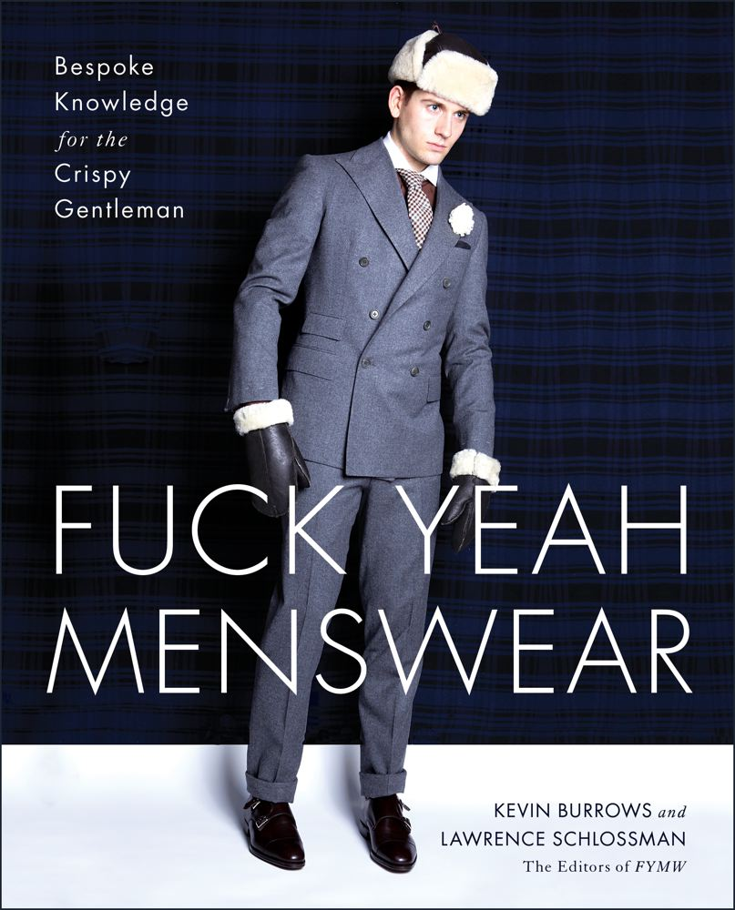
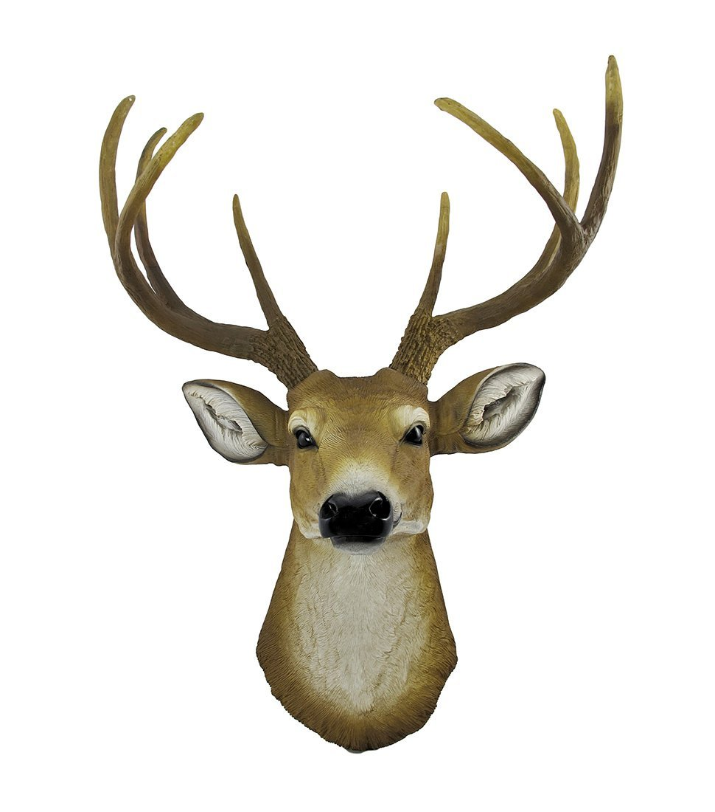
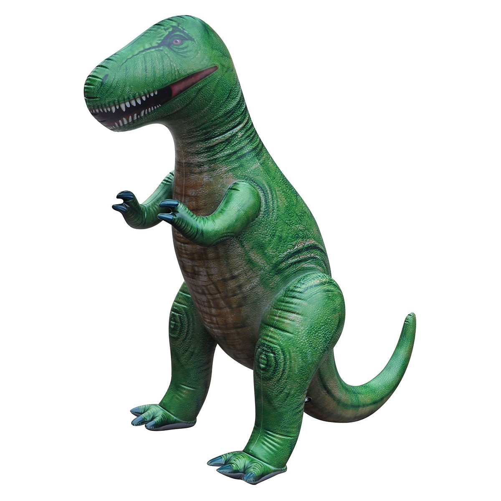

|  |  |  |
B Fuck Yeah Menswear ее создатели просто перенесли на бумагу содержание своего одноименного блога. Но, в отличие от набора скучных правил, публикуемых в большинстве подобных изданий, здесь собраны разнообразные расхожие стереотипы о мужской моде. Интересно, что каждый комментарий авторов в ней выполнен в стихотворной форме.
Крайне простой и понятный каждому предмет: голова оленя высотой с полметра будет хитро улыбаться со стены. Возможность порядком «омужественнить» жилище и при этом обойтись без крови.
Вы можете просто бросить его перед домом и следить за реакцией проходящих мимо людей» — такой вариант использования надувного динозавра предлагает производитель. Уверены, ему найдется место и в доме. Кстати, выбирать придется между экземпляром в один метр и в три.
AB © 2016